UDN
Search public documentation:
AppleiOSProvisioningSetup
日本語訳
中国翻译
한국어
Interested in the Unreal Engine?
Visit the Unreal Technology site.
Looking for jobs and company info?
Check out the Epic games site.
Questions about support via UDN?
Contact the UDN Staff
中国翻译
한국어
Interested in the Unreal Engine?
Visit the Unreal Technology site.
Looking for jobs and company info?
Check out the Epic games site.
Questions about support via UDN?
Contact the UDN Staff
Mobile Home > iOS Provisioning Overview > iOS Provisioning Setup
iOS Provisioning Setup
Overview
 This tool handles packaging your application, signing your application with your apple developer credentials, and deploying the package to your iOS device. The signing process uses public key cryptography and requires both a public and private key.
This tool handles packaging your application, signing your application with your apple developer credentials, and deploying the package to your iOS device. The signing process uses public key cryptography and requires both a public and private key.
Setting Up Provisioning
- If this is your first time developing for iOS hardware, start with the Creating New Provisioning section.
- If you have previously set up to develop for iOS hardware, skip to the Transferring Existing Provisioning section.
Creating New Provisioning
- Generate key pair and certificate request
- Create certificate and mobile provision
- Import provision and certificate into UDK
Generating Certificate Request and Key pair
The first part of the process requires generating a certificate request and key pair from the New Users tab of the configuration wizard. These will be saved to disk and used later on in the process.
- Click the button to display the Generate Certificate Request window. 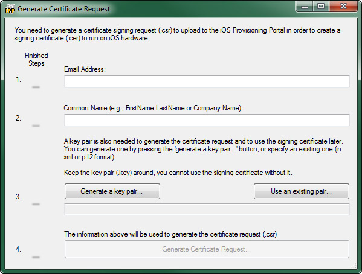
-
Fill in the fields with the following information:
- Email Address - the email address associated with your developer account (e.g., your Apple ID).
- Common Name - The name you want used for with the certificate (e.g., your first and last name or company name).
-
Click the button to generate the key pair file.
A file dialog will open allowing you to save the generated key pair file to disk. Save this file to a known folder. This can be anywhere on your computer, but it makes sense to keep it with the rest of the UDK files. For example:
C:\UDK\Developer Files
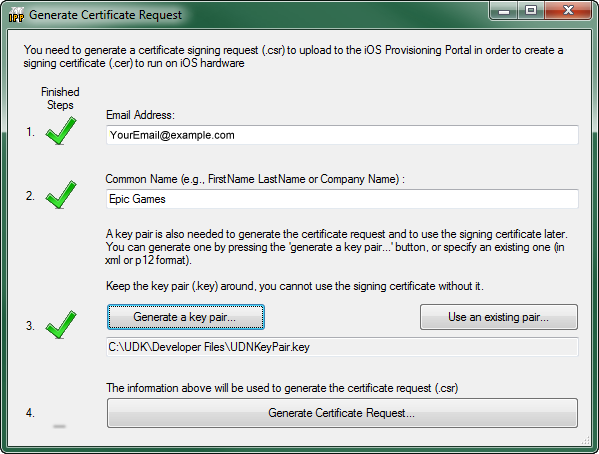 - Click the button to generate the certificate request file. A file dialog will open allowing you to save the generated certificate request file to disk. Save it to the same directory the key pair file was saved to.
Generating Certificate and Provision
- Click the link to go to the iOS Dev Center home page. This is the main page for all iOS development. 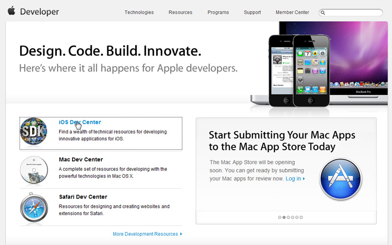
- Click the Login button to login to your developer account. 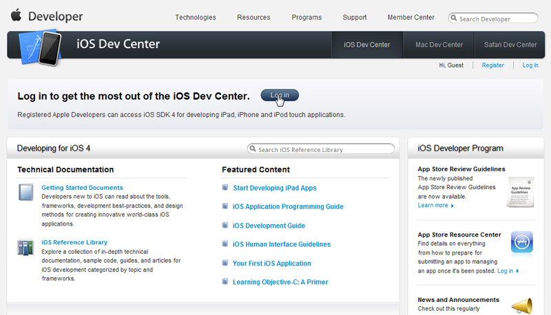 Enter your developer login credentials in the next page to Sign In. This should return you to the iOS Dev Center home page.
- Click on the link on the right sidebar to go to the iOS Provisioning Portal: 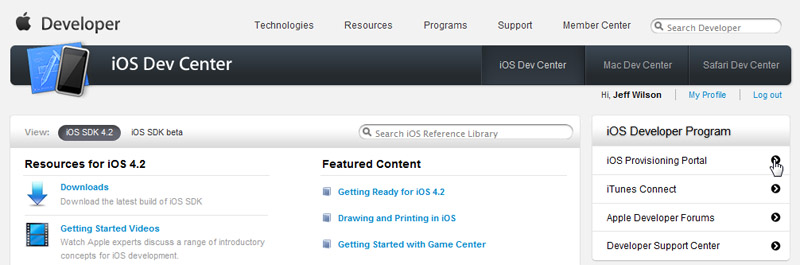
- You should now be at the iOS Provisioning Portal home page. 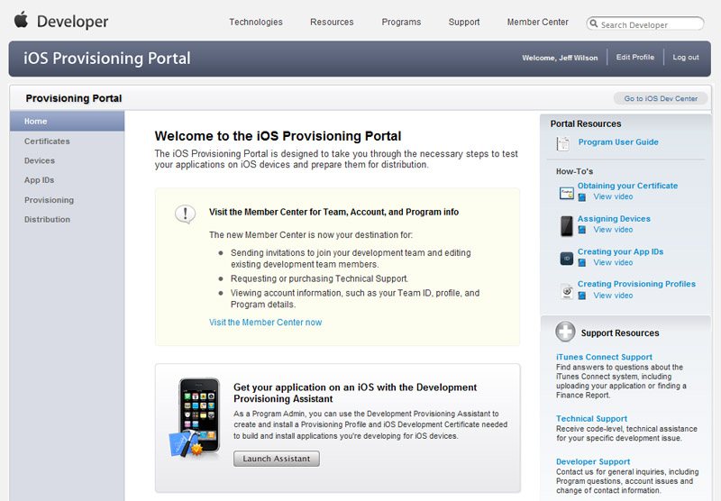 Click Launch Assistant to begin the Development Provisioning Assistant: 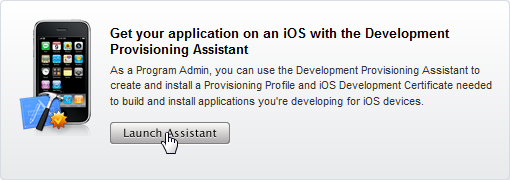
- The Development Provisioning Assistant should open. Click Continue to begin the provisioning process: 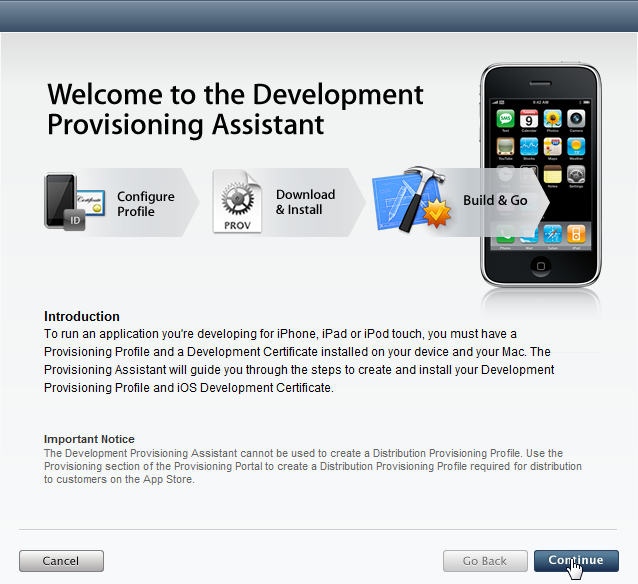
- Now, you must create a new App ID. this is a unique identifier that allows an iOS application to communicate with the Apple Push Notification service or with external hardware accessories. At this point, you need to choose a display name for the App ID, which is just a readable name that will be used in various places on the iOS Provisioning Portal site. Note: By default, the App Id that is created through the assistant uses a wildcard for the bundle identifier. This will make the provision incompatible with Game Center, In App Purchases and the Apple Push Notification service. See the Advanced Provisioning Setup section for information on how to create an App ID compatible with those features and assign it to your provision profile. Enter a new App ID Description into the text field: 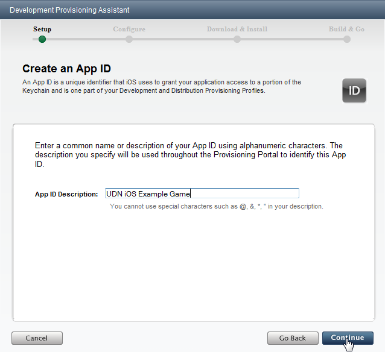
-
Next, you need to assign a development device to the provision. Obviously, this means you need to have an iOS device (iPad, iPhone, iPod Touch). Should you need to add multiple devices, see the Advanced Provisioning Setup section.
Enter the following information into the fields:
- Device Description - This is just the display name that will be used to identify the particular device. If you have multiple devices you would like to use, you can add multiple devices later on through the iOS Provisioning Portal. See Adding Devices for more information.
- Device ID - This is the unique id of your iOS device. There are instructions for locating the id through Xcode on a Mac, but another method is to use the iDevice Info app available in the App Store to find your Device ID. The app will even email the id to you so you can easily copy and paste it into the field.
- You should be viewing the Generate Certificate Signing Request page. Click Continue to skip this page as you have already generated the certificate request through the configuration wizard previously. 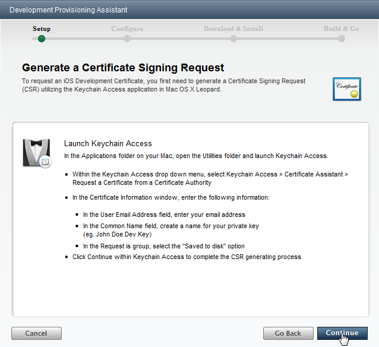 Now, you will submit the developer certificate request. Navigate to and select the certificate request (.csr file) generated through the configuration wizard and click Continue. 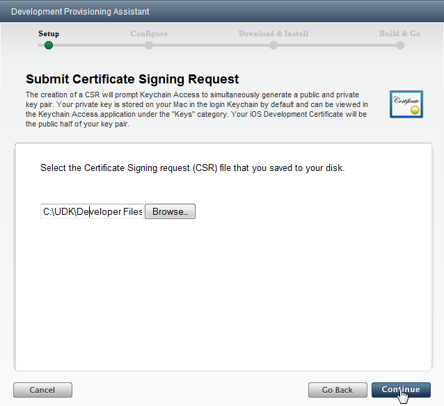
- Enter a description for your provisioning profile and click Continue. This is a display name that will be used to identify this particular provision. 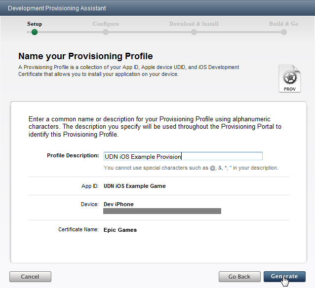
- The provisioning profile will be created when the next page loads. Once the large green checkmark appears, the provision has been created and you can click Continue. 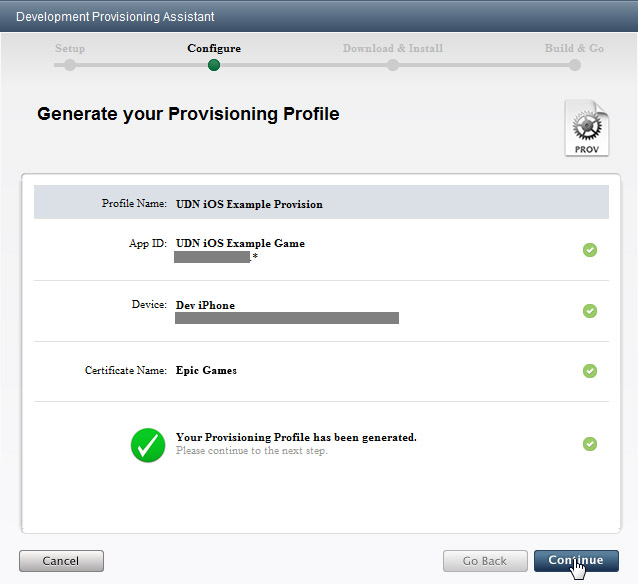
- You need to download the newly created provisioning profile so it can be imported into UDK. Click Download and choose a location to save the file to (the same location you saved the key pair and certificate request would be a good idea). 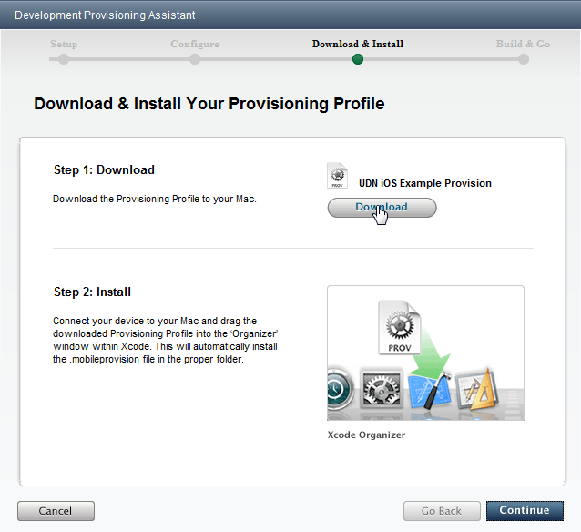 Once the file is downloaded, click Continue to proceed. 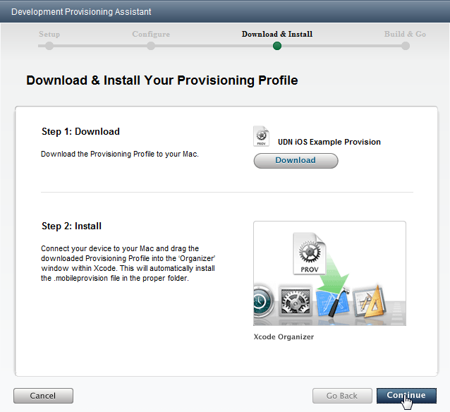 Click Continue on the next page to skip it, unless you want to go ahead and install the provision in Xcode on a Mac. This is not necessary for UDK development, but will be necessary should you decide to submit your game to the App Store down the line. 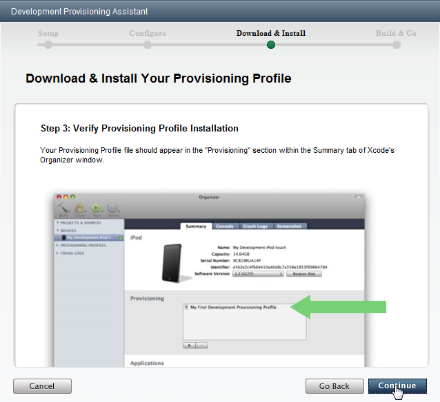
- The developer certificate that was created also needs to be downloaded as it must be imported into UDK as well. Click Download and save the certificate with your other files. 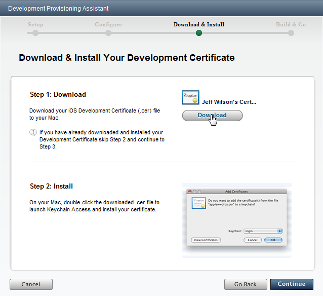 Once the file is downloaded, click Continue to proceed. 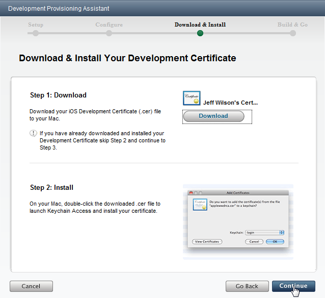 Click Continue on the next page to skip it, unless you want to go ahead install the certificate in Keychain on a Mac. This is not necessary for UDK development, but will be necessary should you decide to submit your game to the App Store down the line. 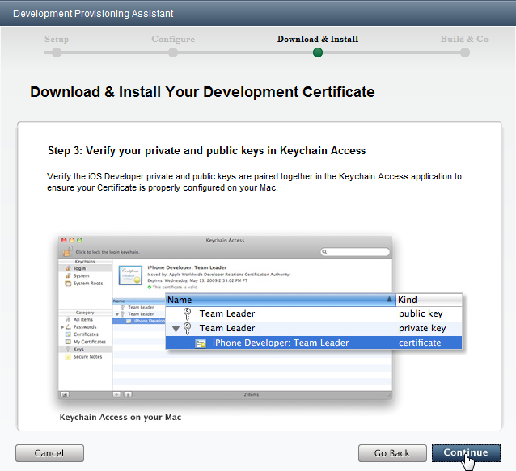
- Click continue to skip the next page. This does not apply to development of iOS applications using UDK. 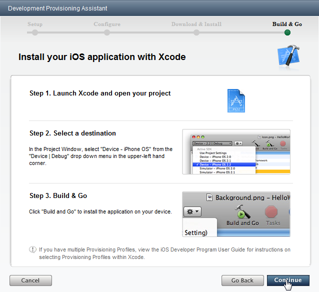 The process of generating your developer certificate and provisioning profile is now complete. Click Done on the next page to exit the assistant. 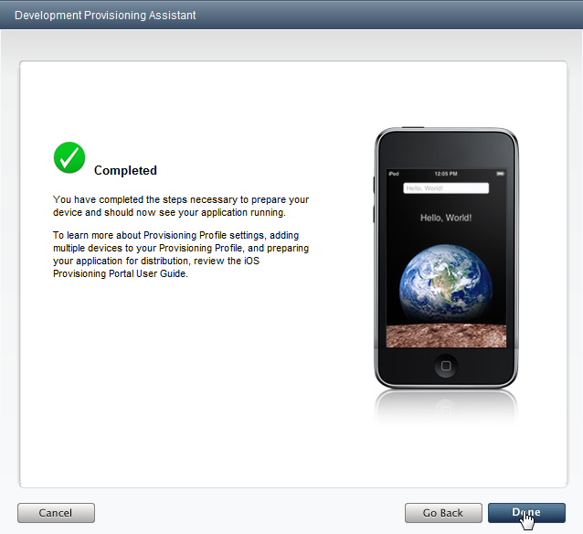
Importing New Provision and Certificate
Once the developer certificate and provisioning profile have been generated and downloaded, they need to be imported into UDK through the configuration wizard.- Click the button to import the provisioning profile. Use the file dialog that opens to find the provisioning profile that was downloaded previously. The green checkmark should appear once the profile has been successfully imported. 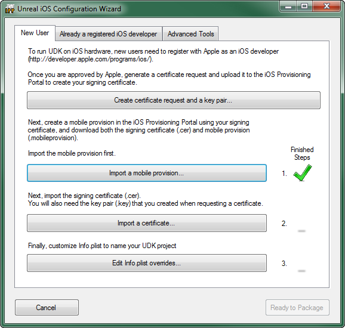
- Next, click the button to import the developer certificate. Use the file dialog to find the certificate that was downloaded previously. A message box prompting you to import the key pair file created previously will appear. 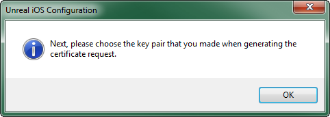 Click OK and use the file dialog that opens to find the key pair file. The green checkmark should appear once the certificate and key pair have been imported successfully. 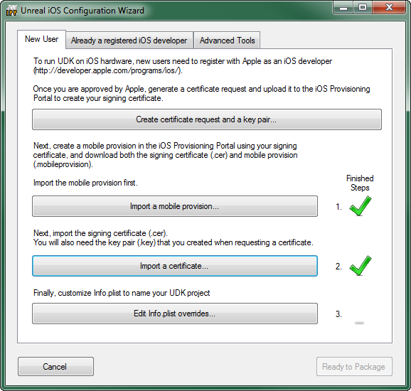
- Click the button to open the Customize Info.plist dialog. 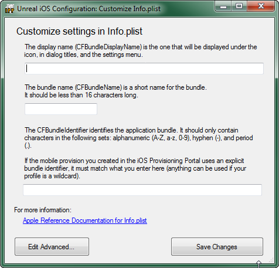
-
Fill in the following information:
- Bundle Display Name - This is the name that will be displayed on the iOS device directly under the app's icon on the home screen. You want to make sure this is a compact name so that it will fit within the allotted space without being cut off. (Example:
UDN iOS Game) - Bundle Name - This is a condensed name used to identify the app. This should be less than 16 characters. (Example:
UDNiOSGame) - Bundle Identifier - This should match the bundle identifier of the App ID created on Apple's Developer website previously. If you used the automatic App ID creation process through the assistant, the bundle identifier of the App ID is a wildcard (*) and the bundle identifier entered here can be anything you want. If you used the manual creation method (Advanced Provisioning) and specified an explicit bundle identifier, the bundle identifier entered here must match that one exactly. (Example:
com.EpicGames.UDNiOSGame)
- Bundle Display Name - This is the name that will be displayed on the iOS device directly under the app's icon on the home screen. You want to make sure this is a compact name so that it will fit within the allotted space without being cut off. (Example:
- Click the button to save the Info.plist information. The green checkmark should appear when the Info.plist has successfully been saved. 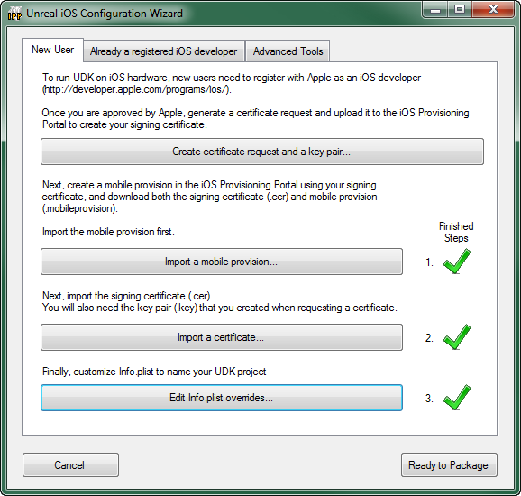
- Click the button to exit the configuration wizard. If you accessed the configuration wizard through the editor through the Start this Level on iPhone in the toolbar, the packing process will continue and the game will be loaded on to the connected iOS device. If no device is connected, an error will occur. If the configuration wizard was accessed thorugh the Start Menu in Windows, the configuration wizard will simply close at this point. TODO - true if opened through Unreal Frontend also? - Jeff Wilson
Transferring Existing Provisioning
Retrieving the Certificate
Existing developers of iOS applications who wish to develop iOS games using UDK must export their certificate and private key from the Keychain Access application in order to import it on the PC running UDK. On a Mac, if you generate a code signing request and there isn't already a key pair for the logged in user, it creates and installs one silently. If there is one for the signed in user, then it just always uses that one. Since that key only exists on the Mac that generated the CSR, the certificate you download from Apple can only be used on that machine unless you export both the certificate and the key pair. Note : The Keychain Access application doesn't really make it clear what you are exporting when you use it, but you can end up exporting:- Just the certificate (no key pair)
- Just the key pair (no certificate)
- The public or the private key individually
- Both the certificate and the key pair
- Launch the Keychain Access application. 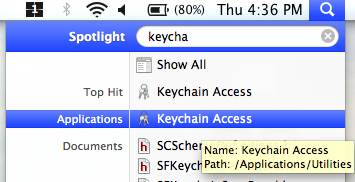
- Select login from the Keychains pane and then select My Certificates in the Category pane in the Keychain Access application. 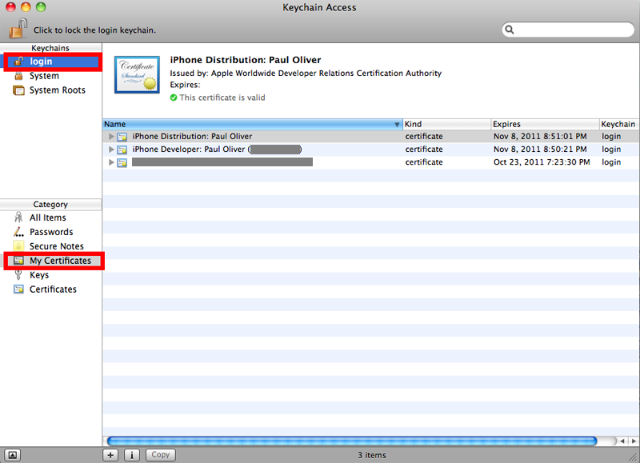
- Select your Developer certificate. This will export both the certificate and the key pair. 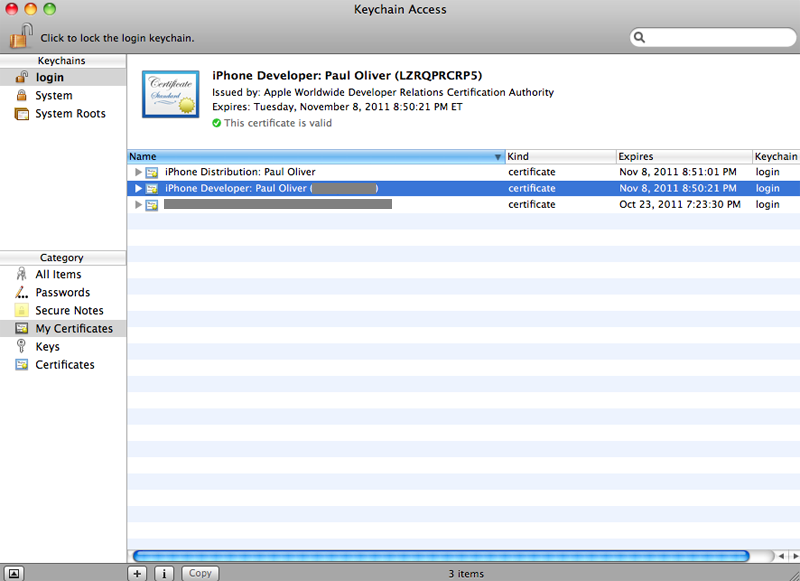
- Now, choose Export items... from the File menu to export the certificate and key pair. 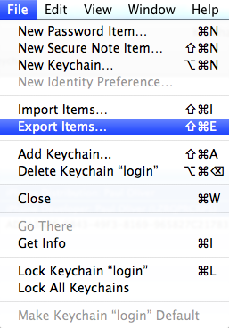 Use the file dialog that opens to save the certificate and key pair in the form of a .p12 file. 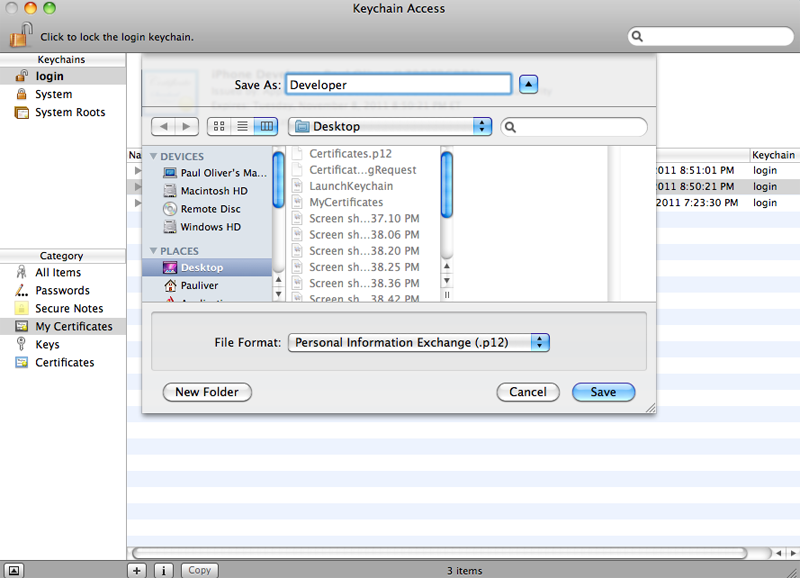
- Keychain will prompt you for your password before allowing the key pair to be exported. 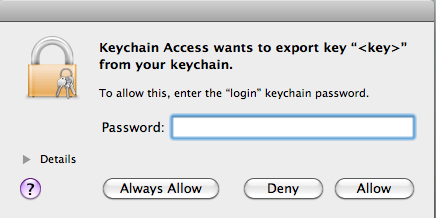 Enter your password and click Allow to continue exporting.
- The certificate and key pair have now been exported. Transfer the file to your PC so that they can be imported into UDK through the configuration wizard.
Retrieving a Certificate from UDK
If you are a developer who has previously set up provisioning for UDK, by generating a certificate request and key pair through the Unreal iOS Configuration Wizard and subsequently downloading a certificate and mobile provisioning profile from the iOS Provisioning Portal on Apple's Developer website, that provisioning can easily be passed around to other developers or moved to a new PC. To pass it around to different developers, you can transfer the provisioning profile, the key file, and the certificate to the new PC and then import them through the Already a registered iOS developer tab of the Unreal iOS Configuration Wizard.Importing Existing Provision and Certificate
Once the developer certificate and provisioning profile have been generated and downloaded, they need to be imported into UDK through the Already a registered iOS developer tab of the configuration wizard.- Click the button to import the provisioning profile. Use the file dialog that opens to find the provisioning profile that was downloaded previously. The green checkmark should appear once the profile has been successfully imported. 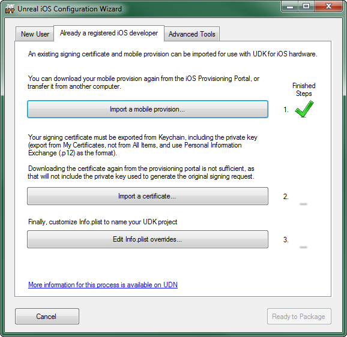
- Next, click the button to import the developer certificate. Use the file dialog to find the certificate and key pair that was exported from the Keychain Access application. The green checkmark should appear once the certificate and key pair have been imported successfully. 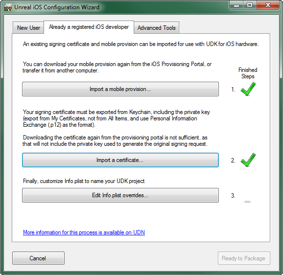
- Click the button to open the Customize Info.plist dialog.
-
Fill in the following information:
- Bundle Display Name - This is the name that will be displayed on the iOS device directly under the app's icon on the home screen. You want to make sure this is a compact name so that it will fit within the allotted space without being cut off. (Example:
UDN iOS Game) - Bundle Name - This is a condensed name used to identify the app. This should be less than 16 characters. (Example:
UDNiOSGame) - Bundle Identifier - This should match the bundle identifier of the App ID created on Apple's Developer website previously. If you used the automatic App ID creation process through the assistant, the bundle identifier of the App ID is a wildcard (*) and the bundle identifier entered here can be anything you want. If you used the manual creation method (Advanced Provisioning) and specified an explicit bundle identifier, the bundle identifier entered here must match that one exactly. (Example:
com.EpicGames.UDNiOSGame)
- Bundle Display Name - This is the name that will be displayed on the iOS device directly under the app's icon on the home screen. You want to make sure this is a compact name so that it will fit within the allotted space without being cut off. (Example:
- Click the button to save the Info.plist information. The green checkmark should appear when the Info.plist has successfully been saved. 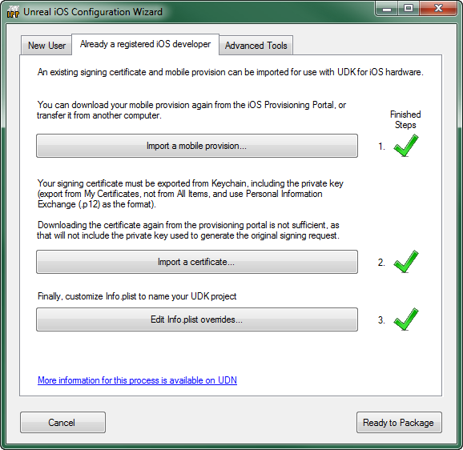
- Click the button to exit the configuration wizard. If you accessed the configuration wizard through the editor through the Start this Level on iPhone in the toolbar, the packing process will continue and the game will be loaded on to the connected iOS device. If no device is connected, an error will occur. If the configuration wizard was accessed through the Start Menu in Windows, the configuration wizard will simply close at this point. TODO - true if opened through Unreal Frontend also? - Jeff Wilson